01

INHALATION
Aromatic molecules interact with olfactory and trigeminal receptors, influencing neural and emotional responses.
Key Pathways:Olfactory (CN I)
Trigeminal (CN V)
NATURE. SCIENCE. HUMAN WELL-BEING.
FROM NATURE’S MOLECULES
TO HUMAN POSSIBILITIES
Bio-responsive ingredients are naturally
derived molecules that interact with
sensory receptors, neural pathways,
and biological targets, offering opportunities
for innovative applications in fragrance,
food & beverage, personal care and
beyond.
REAL MOLECULES.
REAL RESPONSES.
A BRIGHTER TOMORROW.

ONE INGREDIENT. MULTIPLE OPPORTUNITIES.
01
Aromatic molecules interact with olfactory and trigeminal receptors, influencing neural and emotional responses.
Key Pathways:Olfactory (CN I)
Trigeminal (CN V)
02

Molecules interact with oral and gastrointestinal sensors, with potential systemic effects.
Key Pathways:Taste Receptors
Gut Epithelium • ENS
03

Molecules interact with skin receptors, supporting cutaneous and neuro-skin responses.
Key Pathways:Cutaneous Receptors
Neuro-Skin Axis
Naturally derived
bioactive compound
Interaction with
biological targets
Transduction via neural
or cellular pathways
Physiological effects
and well-being
NATURAL SOLUTIONS FOR A MORE VIBRANT LIFE.
SCIENCE TODAY, POSSIBILITIES TOMORROW.
From Product Thinking
to Human Response Thinking
A&S studies how ingredients interact with sensory and biological systems—and how those interactions can be translated into meaningful, measurable applications.
MOREWhat is the ingredient?
What function
does it offer?
How is performance
measured?
Where can it be applied?
How is it sensed
by the body?
Which mechanisms
are involved?
What biological
responses occur?
What functional
outcomes can be
supported?
Perception and
sensory interfaces
Biological pathways
and cellular responses
Measurable responses
and functional outcomes
Translating research
into real-world solutions
SCIENCE FOR A BRIGHTER TOMORROW
From Natural Sources to Bio-Responsive Potential
A&S explores natural ingredients, active compounds, and selected aroma molecules to understand their biological interactions and functional potential.
Our ScienceEXPLORING NATURE. UNLOCKING POTENTIAL.
Natural
Ingredients
Botanical
Extracts
Aroma
Molecules
Functional
Bioactives
Biotechnology-
Derived Actives
NATURAL MOLECULES. MEANINGFUL POTENTIAL.
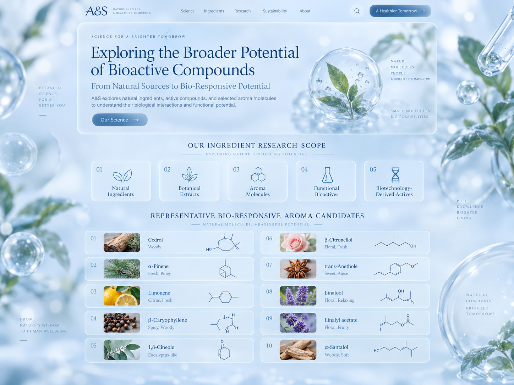
NATURE × SCIENCE × HUMAN WELL-BEING.
Nature-Derived Molecules. Purposeful Human Response.
BOTANICAL INTELLIGENCE
FOR A HEALTHIER TOMORROW
Olfactory Well-Being
BREATHE
BALANCE
BE WELL
Skin Barrier & Comfort
CALM
PROTECT
COMFORT
Sensitive Skin
SOOTHE
BALANCE
RENEW
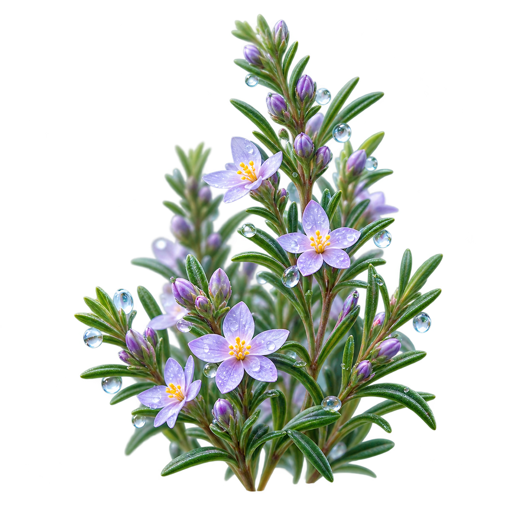
MORE DETAILSSkin Longevity
DEFEND
STRENGTHEN
REJUVENATE
Brightening & Tone
CLARIFY
EVEN
RADIATE
Hair Growth & Vitality
ACTIVATE
NOURISH
THRIVE
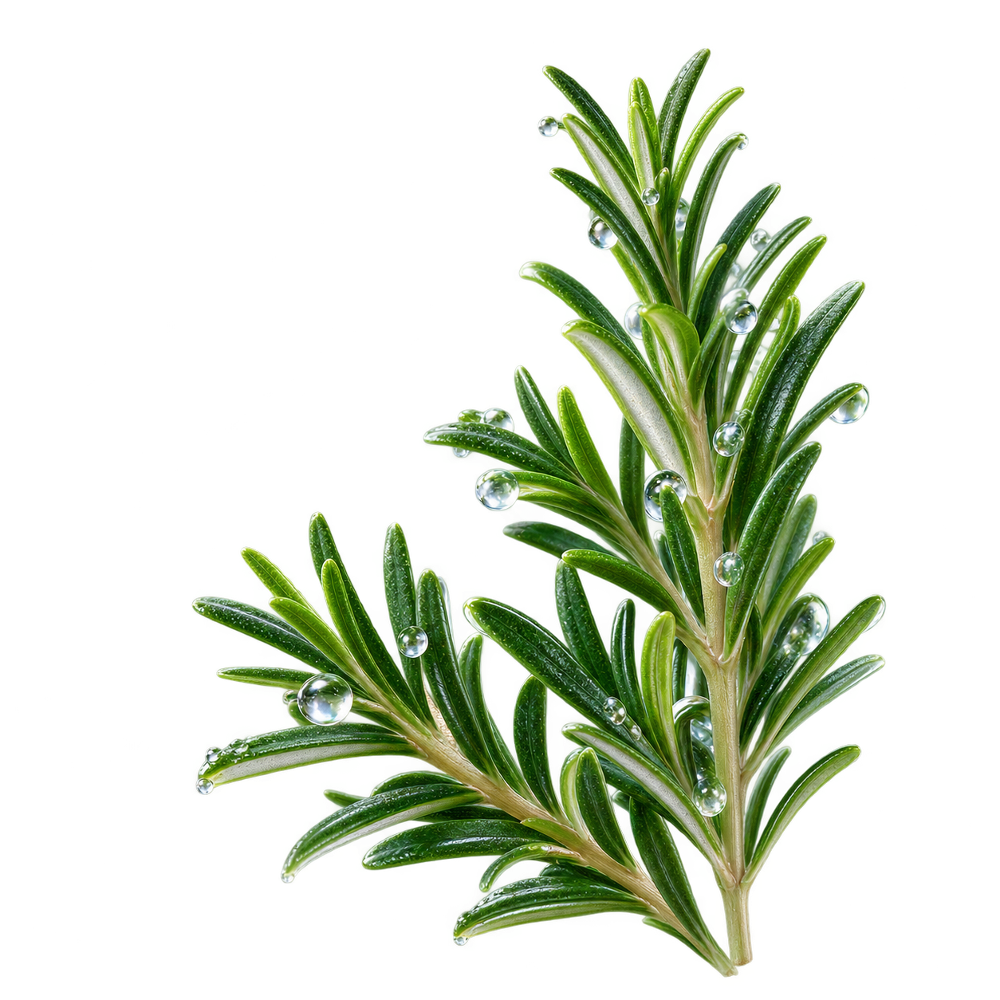
MORE DETAILSHair Color Vitality
PIGMENT
BALANCE
REVITALIZE
01 · A&S Olfactiva™ Ingredient & Olfactory Interface
Nature × Science × PeopleProprietary
bio-responsive
ingredient
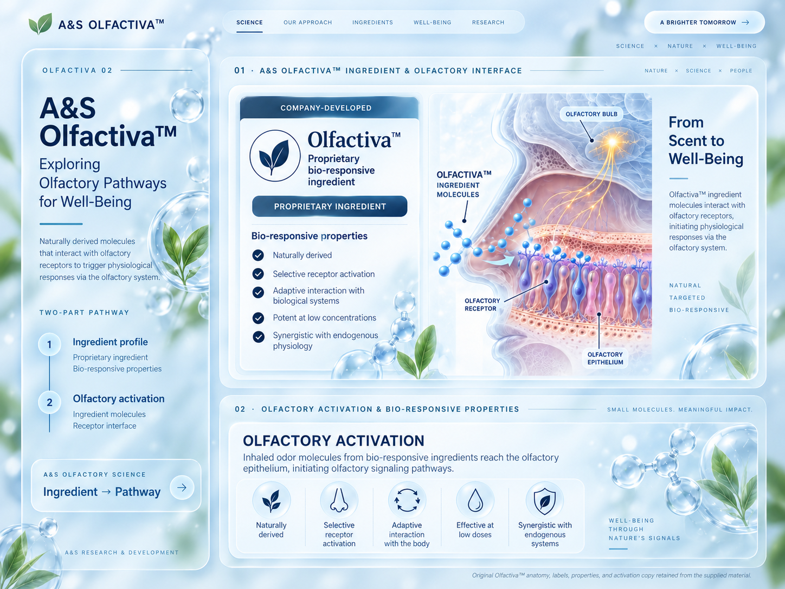
Olfactiva™ ingredient molecules interact with olfactory receptors, initiating physiological responses via the olfactory system.
Natural
Targeted
Bio-responsive
02 · Olfactory Activation & Bio-Responsive Properties
Small molecules. Meaningful impact.Inhaled odor molecules from bio-responsive ingredients reach the olfactory epithelium, initiating olfactory signaling pathways.
Well-being through nature’s signals
01 · Olfactiva™ Ingredient Molecules & Olfactory Pathway
Nature × Science × People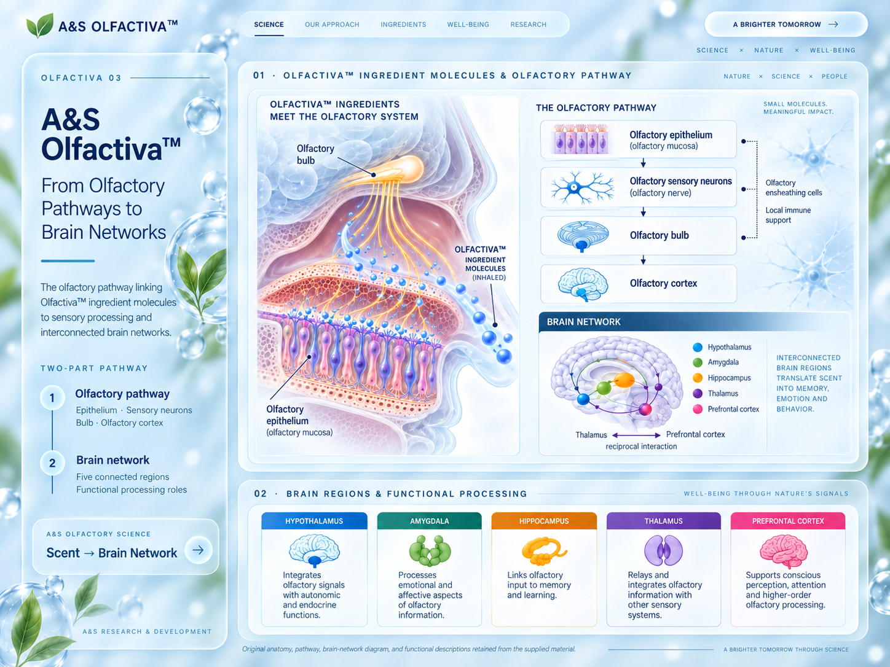
Olfactory ensheathing cellsLocal immune support
Thalamus Prefrontal cortex
reciprocal interaction
Interconnected brain regions translate scent into memory, emotion and behavior.
02 · Brain Regions & Functional Processing
Well-being through nature’s signalsIntegrates olfactory signals with autonomic and endocrine functions.
Processes emotional and affective aspects of olfactory information.
Links olfactory input to memory and learning.
Relays and integrates olfactory information with other sensory systems.
Supports conscious perception, attention and higher-order olfactory processing.
01 · Olfactiva™ Bio-Responsive Signaling
From molecular signals to systemic responses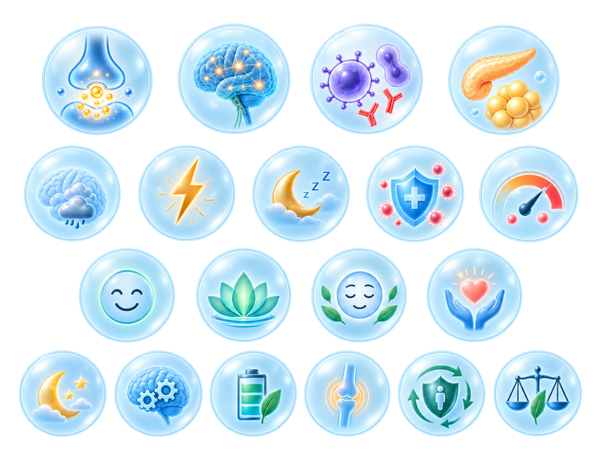
Potential neurogenesis /
sphingomyelinase–ceramide signaling
02 · Potential Relevance & Well-Being Outcomes
From physiological signals to a healthier tomorrow01 · A&S Travion™ Ingredient System
Five bio-responsive ingredientsCompany-developed proprietary
bio-responsive aroma ingredient system
Floral · Calming
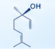
Soothing and calming aroma profile
Citrus · Refreshing
Refreshing multi-monoterpene composition
Citrus · Uplifting
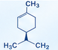
Uplifting antioxidant action
Herbal · Soothing
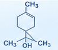
Herbal soothing profile
Herbal · Balancing
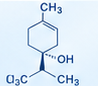
Herbal balancing profile
02 · A&S Travion™ Support Profile
One system. Multiple benefits.TRPV1 / TRPA1 modulation
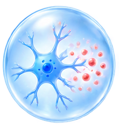
Helps reduce neurogenic inflammation
Supports immune balance
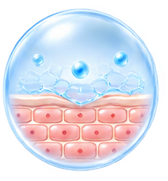
Supports barrier integrity

Supports skin comfort & well-being
02 · A&S Travion™ Mechanism of Action
Five bio-responsive ingredientsSoothing & calming
Floral · Calming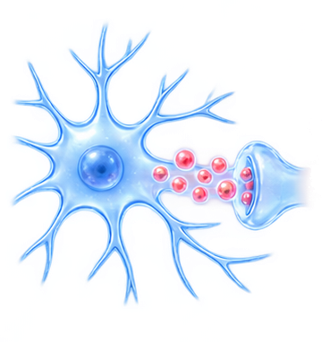
Reduced neural signaling
Decreased neurotransmitter release
Maintained nerve-calming state
Refreshing multi-monoterpene composition
Citrus · Refreshing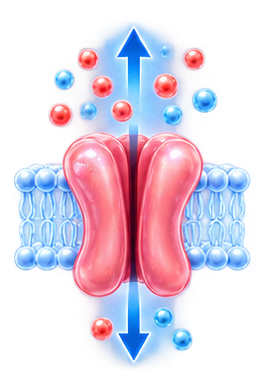
Synergistic receptor interaction
Broader binding potential
Enhanced efficacy through composition
Uplifting antioxidant action
Citrus · UpliftingTRPV1 modulation
Oxidative-stress scavenging
Reduced inflammatory signaling
Herbal soothing
Herbal · Soothing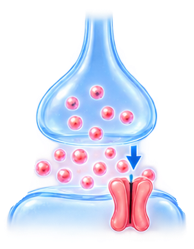
Sensory-neuron desensitization
Enhanced anti-nociceptive effect
Reduced substance P release
Herbal balancing
Herbal · Balancing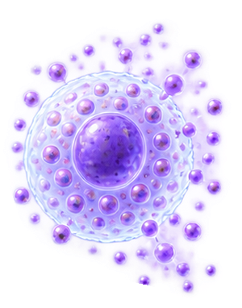
Immune-cell modulation
Reduced mast-cell degranulation (histamine release)
Support for immune balance
01 · Exposome & Epidermal Response
Environment meets skin biologyUV / UVB
Heat
Chemicals
Pollution
Microbiome dysbiosis
Stress
Travion™ inhibits TRPV1 and TRPA1
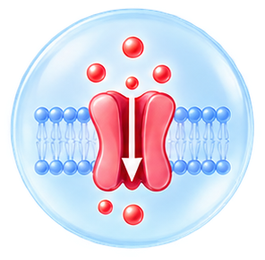
TRPV1 Activity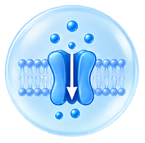
TRPA1 Activity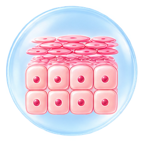
Keratinocyte response
(restored)
Strong dual inhibition
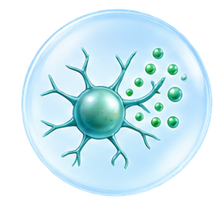
Acetylcholine
(ACh)
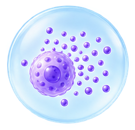
Histamine
Inflammatory cytokines
02 · Downstream Response & Barrier Integrity
One pathway. Healthier-looking skin.Skin inflammation & neurogenic reactivity
Immune balance & skin comfort
Barrier recovery & resilience
cHPA Axis / Cortisol
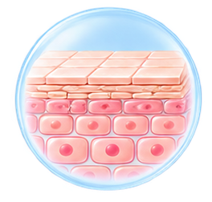
A&S Travion™ · Long-Term Skin Benefit Profile
Six complementary benefit areasHelps soothe and calm reactive skin.
01 · Inflammation
Supports a balanced and adaptive skin immune response.
02 · Immune Balance
Helps reduce visible redness and sensitivity.
03 · Calmer Skin
Strengthens skin barrier for enhanced protection.
04 · Barrier Support
Helps buffer the impact of stress on the skin.
05 · Stress-Related
Promotes healthy-looking, comfortable, and resilient skin.
06 · Comfort & Resilience
01 · KEY AROMA BIO-RESPONSIVE INGREDIENTS
MERAXYL™Company-developed proprietary bio-responsive aroma ingredient system
Selected natural aroma compounds with bio-responsive properties to help support sensitive skin.
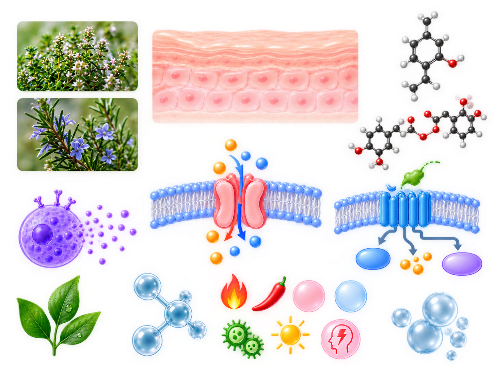
A natural monoterpene compound with herbal origin, known for its purifying properties.
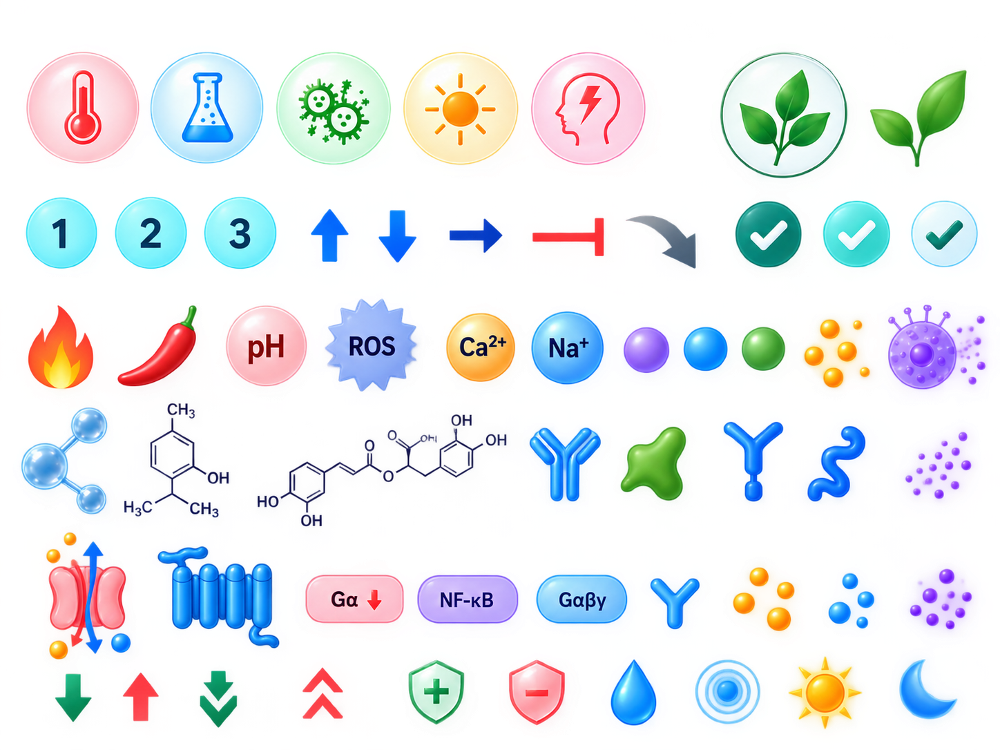
A natural polyphenol compound with antioxidant properties, widely found in rosemary.
02 · BIO-RESPONSIVE SUPPORT FOR SENSITIVE SKIN
MERAXYL™From natural aroma compounds to more resilient skin
SCIENCE
NATURE
SKIN WELL-BEING
02 · DUAL-PATHWAY NEUROIMMUNE MECHANISM
MERAXYL™Agonists:
heat · capsaicin · low pH · ROS
Thymol modulates the TRPV1 binding site
Agonists:
substance P · C48/80 · C3a
Rosmarinic acid modulates MRGPRX2 activation
03 · SYNERGISTIC MODULATION FOR SENSITIVE SKIN
MERAXYL™01 · EXPOSOME STRESSORS & EPIDERMAL ACTIVATION
MERAXYL™Daily environmental stressors can activate epidermal receptors and trigger skin sensitivity.
(Keratinocytes)
02 · BIO-RESPONSIVE MODULATION & SKIN COMFORT
MERAXYL™Meraxyl™ helps modulate key signaling pathways to reduce mast-cell reactivity and support calmer, more comfortable skin.
01 · A&S Cortiva™ Ingredient System
Nature × Science × People
Company-developed proprietary
bio-responsive aroma ingredient system
Science
Inspired
by Nature
Key Aroma Bio-Responsive Ingredients
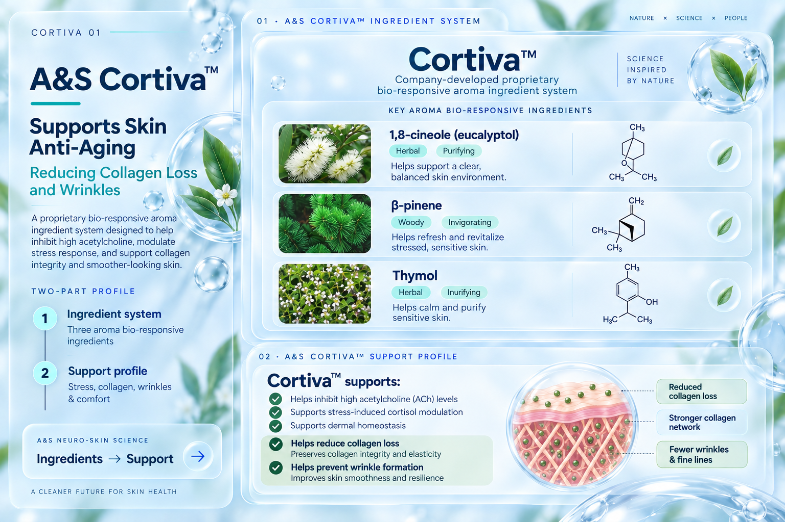
Helps support a clear, balanced skin environment.
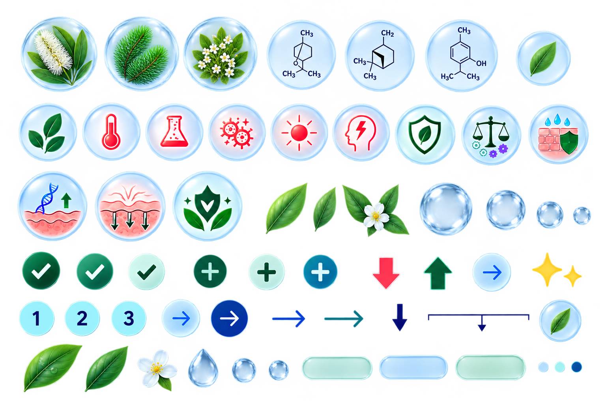
Helps refresh and revitalize stressed, sensitive skin.
Helps calm and purify sensitive skin.
02 · A&S Cortiva™ Support Profile
Cortiva™
Nature × Science × People
Science
Inspired
by Nature
Elevated ACh-related signaling
β-Pinene–linked modulation
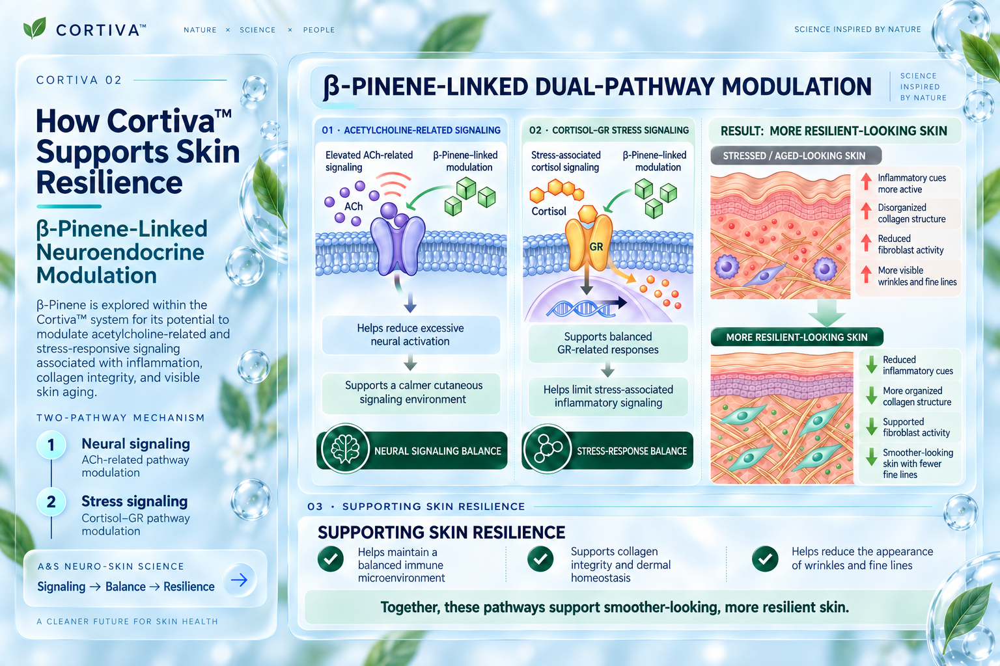
Helps reduce excessive neural activation
Supports a calmer cutaneous signaling environment
Stress-associated cortisol signaling
β-Pinene–linked modulation
Supports balanced GR-related responses
Helps limit stress-associated inflammatory signaling
03 · Supporting Skin Resilience
Helps maintain a balanced immune microenvironment
Supports collagen integrity and dermal homeostasis
Helps reduce the appearance of wrinkles and fine lines
Together, these pathways support smoother-looking, more resilient skin.
01 · Exposome Stressors & Epidermal Response
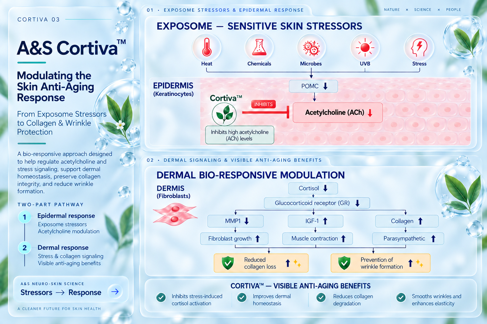
Heat(Keratinocytes)
Inhibits high acetylcholine (ACh) levels
POMC
Acetylcholine (ACh)
02 · Dermal Signaling & Visible Anti-Aging Benefits
(Fibroblasts)
Cortisol
Glucocorticoid receptor (GR)
MMP1
Fibroblast growth
IGF-1
Muscle contraction
Collagen
Parasympathetic
Reduced collagen loss
Prevention of wrinkle formation
Nature × Science × People
Six benefit areas for skin comfort, balance, and resilience.
Science
Inspired
by Nature
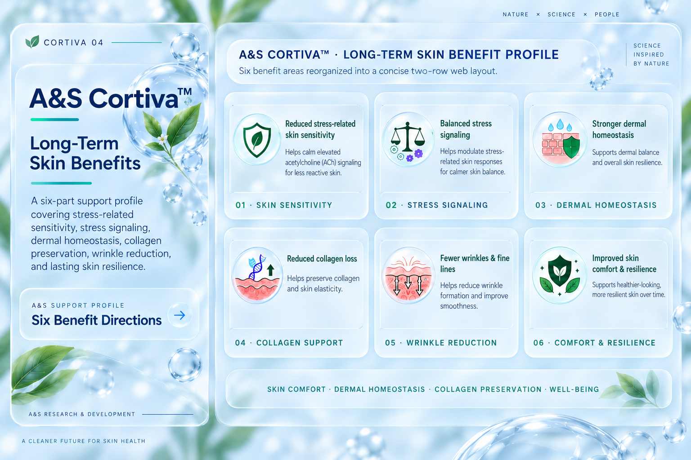
Helps calm elevated acetylcholine (ACh) signaling for less reactive skin.
01Skin Sensitivity
Helps modulate stress-related skin responses for calmer skin balance.
02Stress Signaling
Supports dermal balance and overall skin resilience.
03Dermal Homeostasis
Helps preserve collagen and skin elasticity.
04Collagen Support
Helps reduce wrinkle formation and improve smoothness.
05Wrinkle Reduction
Supports healthier-looking, more resilient skin over time.
06Comfort & Resilience
Skin Comfort · Dermal Homeostasis · Collagen Preservation · Well-Being
01 · A&S Melacor™ Ingredient System Nature × Science × Radiant Skin
Company-developed proprietary bio-responsive ingredient system
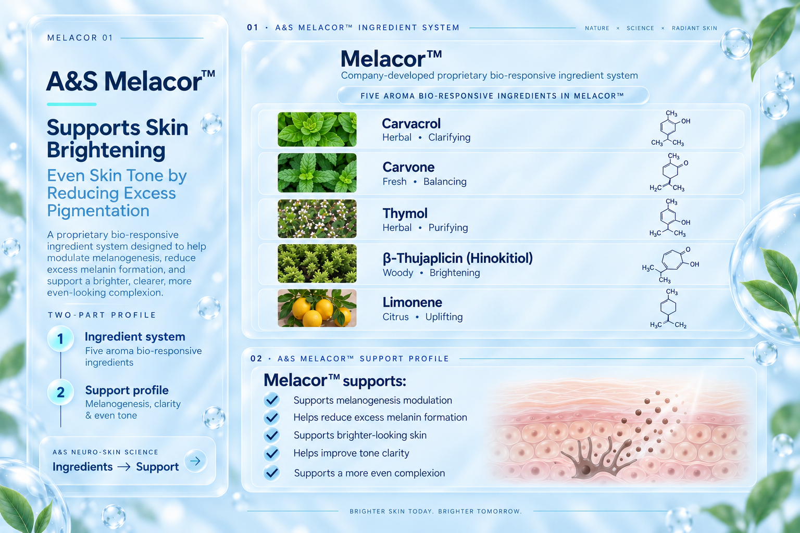
HerbalClarifying
FreshBalancing
HerbalPurifying
WoodyBrightening
CitrusUplifting
02 · A&S Melacor™ Support Profile
Brighter skin today. Brighter tomorrow.
Helps reduce excessive melanogenic signaling
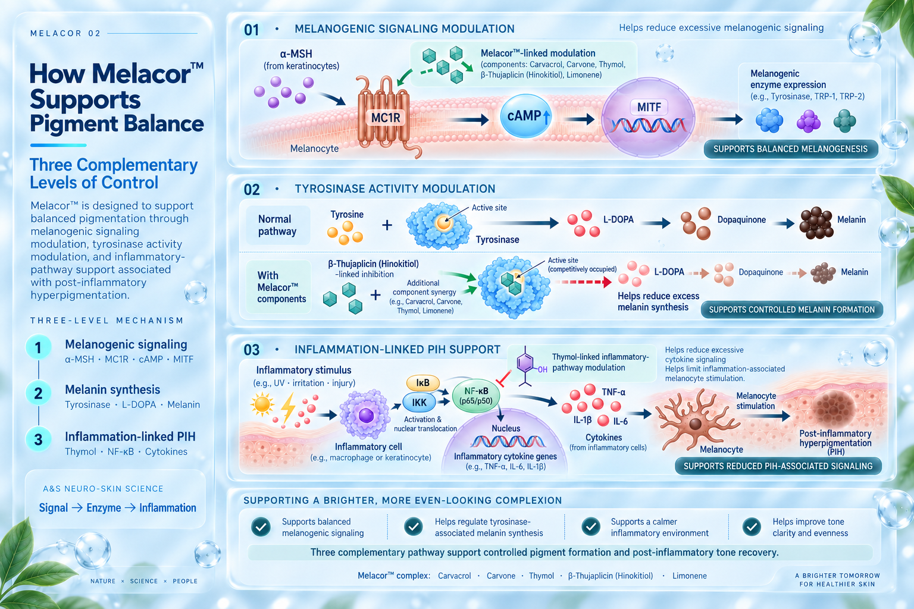
Melacor™-linked modulation supports balanced melanogenic signaling through its five-component ingredient system.
β-Thujaplicin (Hinokitiol)-linked inhibition, with additional component synergy, helps reduce excess melanin synthesis.
Thymol-linked inflammatory-pathway modulation helps reduce excessive cytokine signaling and limit inflammation-associated melanocyte stimulation.
Three complementary pathways support controlled pigment formation and post-inflammatory tone recovery.
Melacor™ complex: Carvacrol · Carvone · Thymol · β-Thujaplicin (Hinokitiol) · Limonene
01 · Skin Stress Triggers & Melanocyte Activation
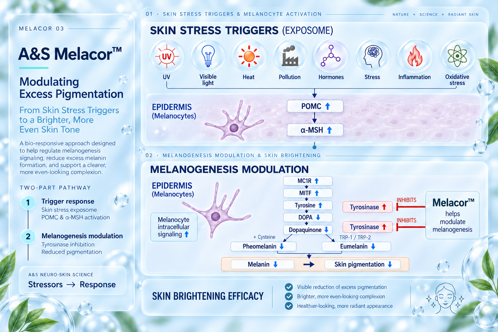
Environmental and internal skin stress signals activate the POMC/α-MSH pathway.
02 · Melanogenesis Modulation & Skin Brightening
Melacor™ helps inhibit tyrosinase activity and supports controlled melanin production for a more even skin tone.
Helps improve skin radiance and clarity.
01Skin radiance
Supports a more uniform-looking complexion.
02Even skin tone
Helps reduce the look of excess melanin-related darkening.
03Pigmentation
Supports balanced melanin production pathways.
04Tyrosinase
Helps promote a cleaner, fresher skin appearance.
05Complexion clarity
Supports smoother, brighter, more refined-looking skin tone.
06Tone refinement
01 · A&S Morphagen™ Ingredient System
Visible science · Real beauty
Company-developed proprietary bio-responsive ingredient system
Seven aroma bio-responsive ingredients in Morphagen™
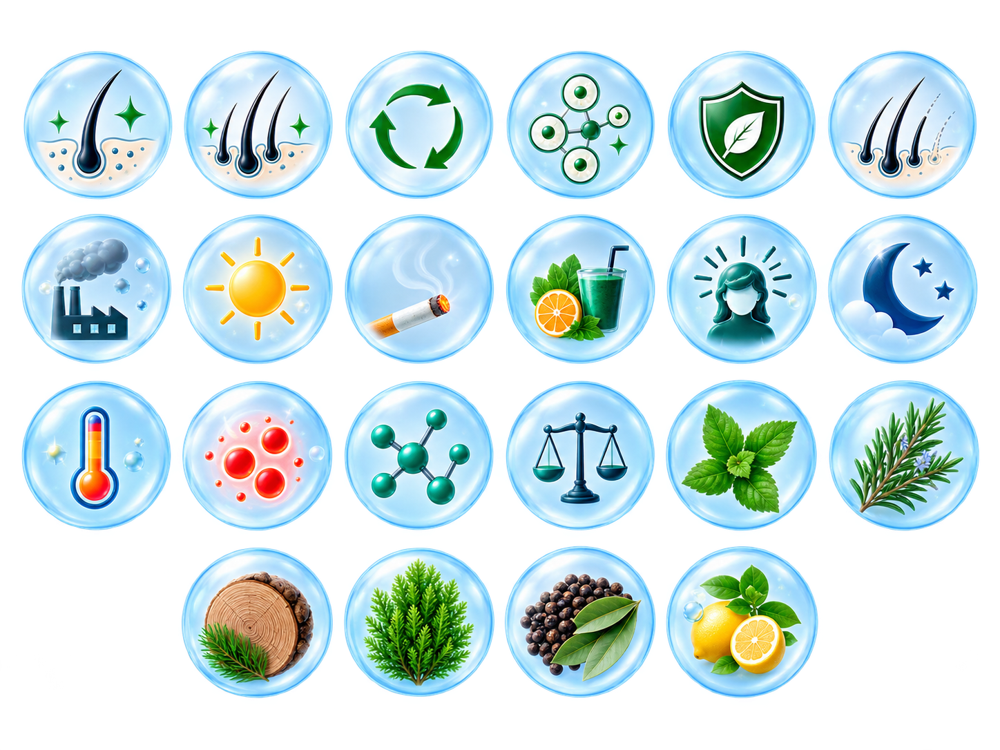
Herbal · Activating
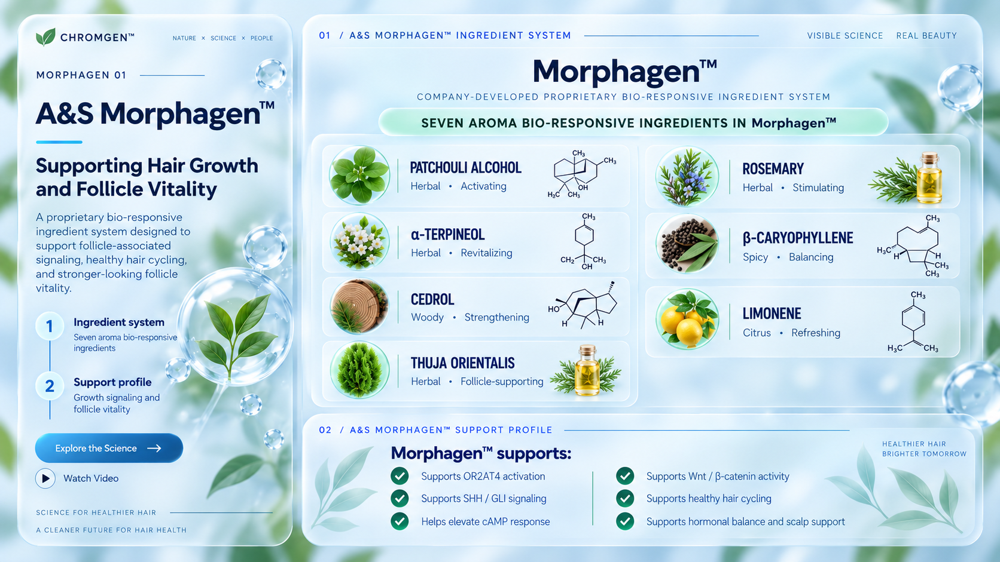
Herbal · Revitalizing
Woody · Strengthening
Herbal · Follicle-supporting
Herbal · Stimulating
Spicy · Balancing
Citrus · Refreshing
02 · A&S Morphagen™ Support Profile
Science for healthier hair
A&S Morphagen™
Science for healthier hair
Seven complementary bio-responsive pathways working together for healthier, stronger-looking hair.
OR2AT4 / cAMP
Growth-signaling support
Androgen-pathway support
Hormonal-pathway balance
Structural anchoring
Follicle-structure support
Wnt / β-catenin
Hair-cycle support
Scalp microenvironment
Microcirculation & scalp support
CB2 / NRF2
Immune & antioxidant balance
System delivery
System delivery support
01 · Hair Follicle Signal Triggers & ROS
Science for healthier hair
External and internal factors that increase ROS and stress the hair follicle.
Pollution
UV radiation
Smoking
Diet
Stress
Poor sleep
Temperature fluctuations
Inflammation
Hormonal changes
Metabolic imbalance
Inhibits hair follicle
02 · Follicle Signaling & Hair-Cycle Support
Science for healthier hair
Morphagen™ helps activate key pathways for hair-cycle support.
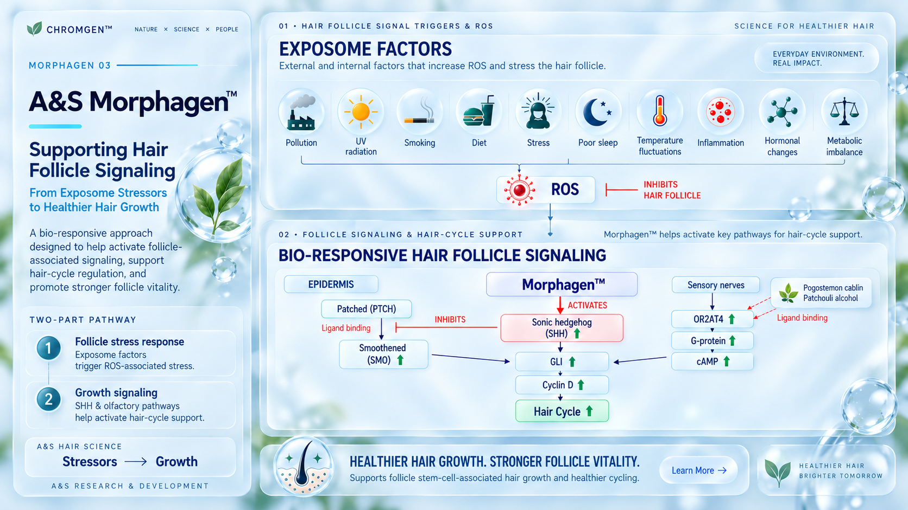
EpidermisMorphagen™Sensory nervesPatched (PTCH)SmoothenedScroll to explore the pathway
A&S Morphagen™
Science for healthier hair
Plant science. Advanced hair care.
Helps support visible hair growth and vitality.
Supports a denser, more voluminous-looking appearance.
Helps support a healthy active hair cycle.
Supports follicle stem-cell-associated renewal signaling.
Helps support balanced scalp comfort and resilience.
Helps improve the look of miniaturization-related thinning.
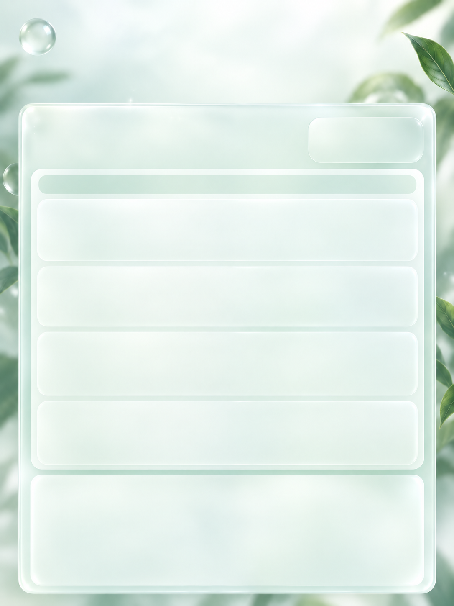
Supports Hair Follicle Pigmentation
and Color Vitality
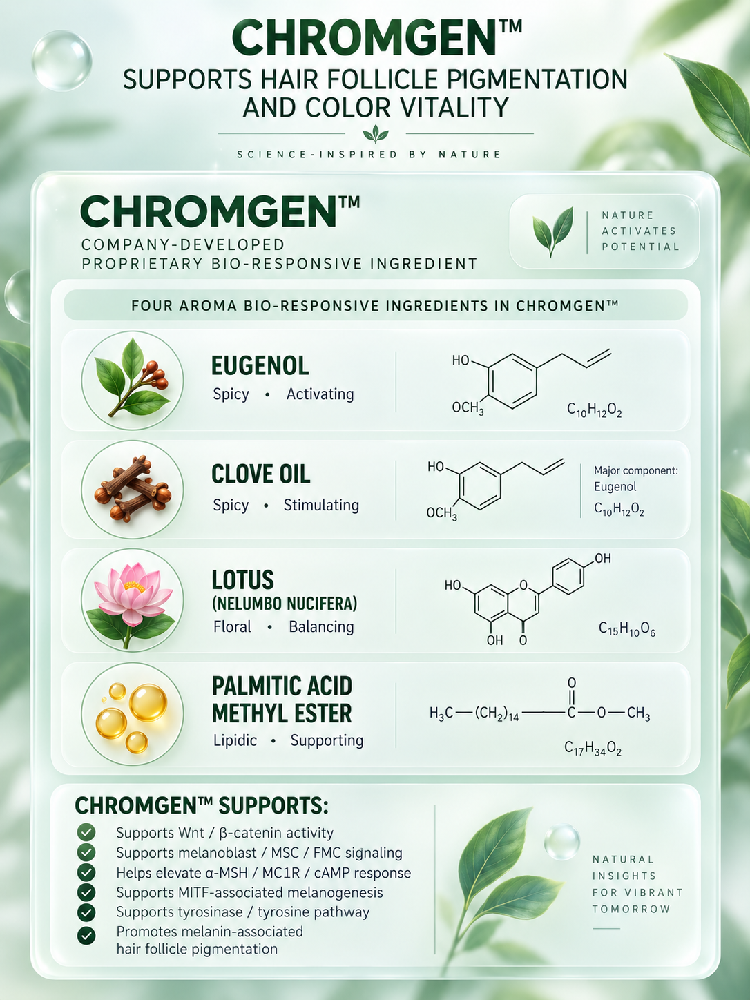
SCIENCE-INSPIRED BY NATURE
ChromgenTM
COMPANY-DEVELOPED
PROPRIETARY BIO-RESPONSIVE INGREDIENT
NATURE
ACTIVATES
POTENTIAL
Four Aroma Bio-Responsive Ingredients in ChromgenTM
Spicy • Activating
Spicy • Stimulating
Floral • Balancing
Lipidic • Supporting
(NELUMBO NUCIFERA)
C10H12O2
Major component:
Eugenol
C10H12O2
C15H10O6
C17H34O2
ChromgenTM Supports:
Supports Wnt / β-catenin activity
Supports melanoblast / MSC / FMC signaling
Helps elevate α-MSH / MC1R / cAMP response
Supports MITF-associated melanogenesis
Supports tyrosinase / tyrosine pathway
Promotes melanin-associated
hair follicle pigmentation
NATURAL
INSIGHTS
FOR VIBRANT
TOMORROW
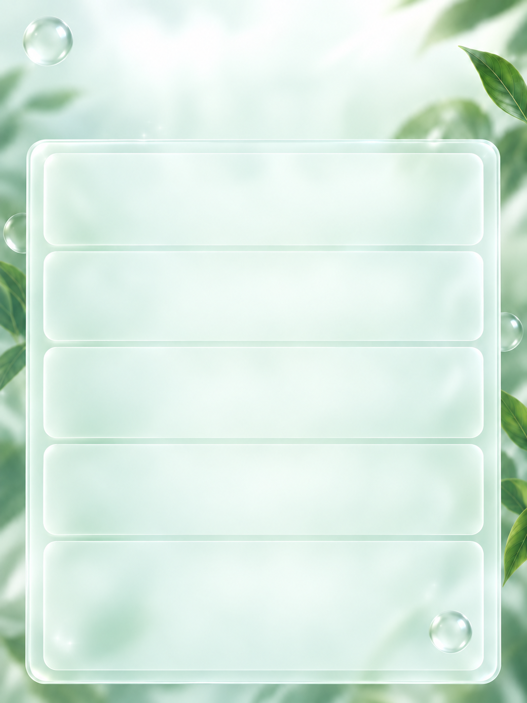
Supports Visible Benefits
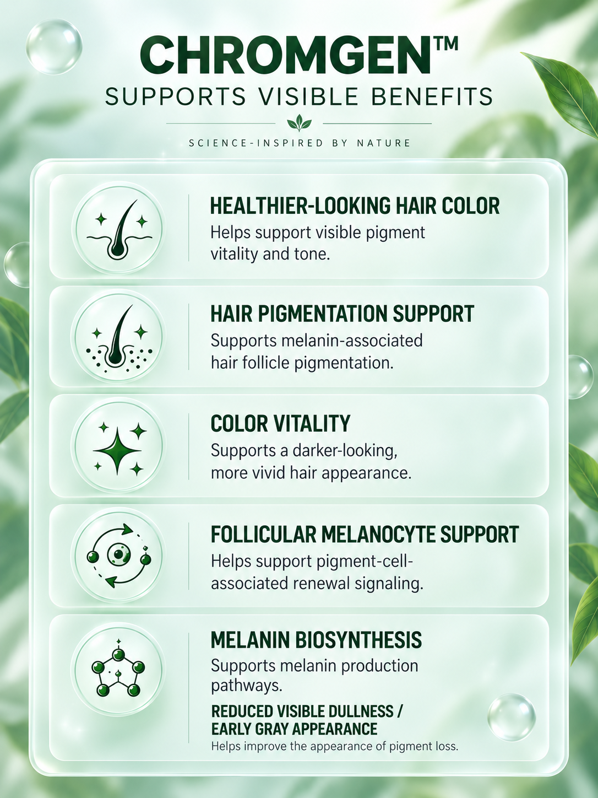
SCIENCE-INSPIRED BY NATURE
Helps support visible pigment
vitality and tone.
Supports melanin-associated
hair follicle pigmentation.
Supports a darker-looking,
more vivid hair appearance.
Helps support pigment-cell-
associated renewal signaling.
Supports melanin production
pathways.
Helps improve the appearance of pigment loss.
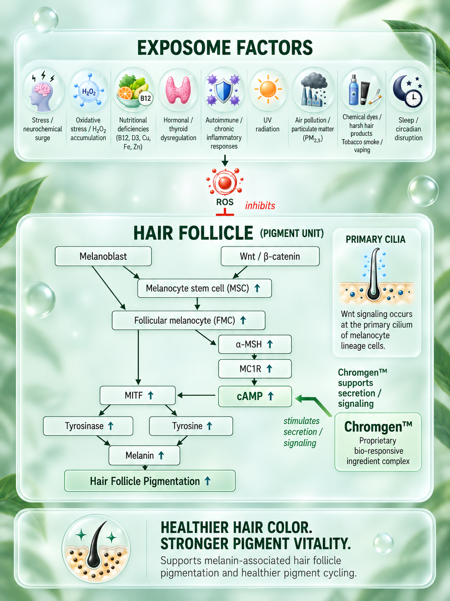
Stress /
neurochemical
surge
Oxidative
stress / H2O2
accumulation
Nutritional
deficiencies
(B12, D3, Cu,
Fe, Zn)
Hormonal /
thyroid
dysregulation
Autoimmune /
chronic
inflammatory
responses
UV
radiation
Air pollution /
particulate matter
(PM2,5)
Chemical dyes /
harsh hair
products
Tobacco smoke /
vaping
Sleep /
circadian
disruption
ROS
inhibits
Hair Follicle
(Pigment Unit)
Melanoblast
Wnt / β-catenin
Melanocyte stem cell (MSC)
Follicular melanocyte (FMC)
α-MSH
MC1R
cAMP
MITF
Tyrosinase
Tyrosine
Melanin
Hair Follicle Pigmentation
Primary Cilia
Wnt signaling occurs
at the primary cilium
of melanocyte
lineage cells.
ChromgenTM
supports
secretion /
signaling
stimulates
secretion /
signaling
ChromgenTM
Proprietary
bio-responsive
ingredient complex
Supports melanin-associated hair follicle
pigmentation and healthier pigment cycling.